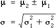

Finding probabilities
We often need to find the probability that the sum or difference of two measurements will be within a particular range — for example, the probability that the difference between the heights of two randomly selected people is greater than 20 cm.
If two random variables, X1 and X2, have normal distributions with means µ1 and µ2 and standard deviations σ1 and σ2, their sum and difference are also normally distributed with mean and standard deviation given by the formulae

To obtain probabilities relating to the sum or difference, any value x should first be translated into a z-score.

Probabilities relating to this z-score can be obtained from a standard normal distribution. The examples below illustrate the method.
Example (total of several variables)
The following example shows how to find a probability relating to the total of the values in a random sample. (Note that the final step of finding the area under the standard normal density could be found from normal tables or on a computer.)
Example (sum of two variables with different sd)
The next example applies a similar method to a problem concerning the sum of two variables with different standard deviations.
Example (difference between two variables)
The final example involves the difference between two variables